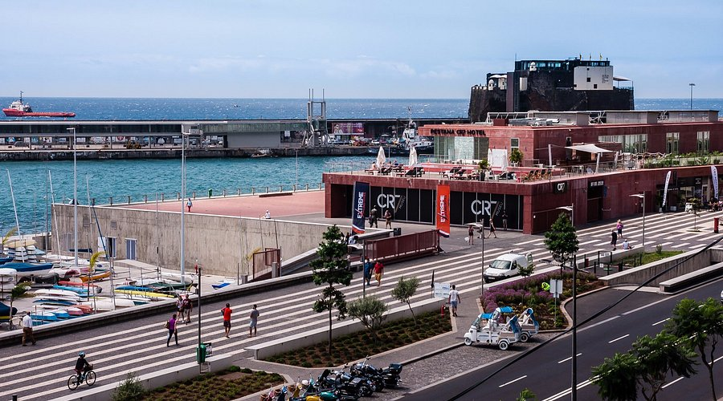

Atividades no Funchal

Mercado dos Lavradores
Visite o mercado tradicional do Funchal e descubra frutas, flores e produtos locais.

Teleférico do Funchal
Desfrute de uma viagem panorâmica até Monte, com vistas deslumbrantes sobre a cidade.

Jardim Botânico da Madeira
Explore uma coleção incrível de plantas e flores de várias partes do mundo.

Museu CR7
Conheça a história de Cristiano Ronaldo e veja troféus e memorabilia do craque madeirense.